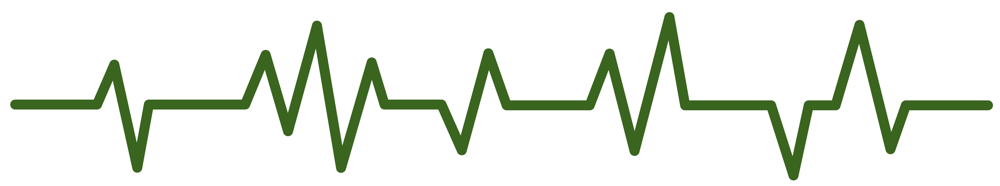

YOUR TASK IS SAFE
YOUR TASK REQUIRES ADUSTMENTS
YOUR TASK IS {{res['result']}}
RESULTS
- RWL = {{report['RWL']}}
Due to the RWL being calculated as 0, the Load Index (LI) cannot be determined. Please review the recommendations provided to adjust the lifting task for safer conditions.
{% elif res['risk'] == "very Low" %} p>RISK LEVEL: VERY LOW.SINCE THE LI ≤ 1, YOUR TASK IS SAFE.
{% elif res['risk'] == "Low" %}RISK LEVEL: LOW.
SINCE THE LI > 1, YOUR TASK IS UNSAFE.
{% elif res['risk'] == 'Moderate' %}RISK LEVEL: MODERATE.
SINCE THE LI > 1, YOUR TASK IS UNSAFE.
{% elif res['risk'] == 'High' %}RISK LEVEL: HIGH.
SINCE THE LI > 1, YOUR TASK IS UNSAFE.
{% elif res['risk'] == 'Very High' %}RISK LEVEL: VERY HIGH.
SINCE THE LI > 1, YOUR TASK IS UNSAFE.
{%else%}RISK LEVEL: Incorrect.
SINCE THE LI ≤ 1, YOUR TASK IS {{res['result']}}.
{% endif %}RECOMMENDATIONS
{% if res['risk'] == "cannot be determined" %}Some parameter values have exceeded acceptable ranges, resulting in an RWL of 0. To ensure safe lifting conditions, please consider the following recommendations for adjusting parameter values:
- For HM: Adjust the horizontal location of the load (H) to be below 63 cm.
- For VM: Ensure the vertical location of the load (V) is below 175 cm.
- For DM: Ensure the distance of the lift (D) is below 175 cm.
- For AM: Adjust the asymmetry angle of the lift (A) to be below 135°.
- For FM: Avoid excessive frequency of lifts and consider adjusting the work duration to ensure safer lifting practices.
BASED ON THE PARAMETERS PROVIDED, IT CAN BE CONFIDENTLY STATED THAT THE LIFTING TASK MEETS THE SAFETY STANDARDS OF NIOSH, AND IS CONSIDERED SAFE
- For the Horizontal Location of the Load ( HM ): Reduce the distance between the body and the load. Keeping the load close to the body during the lift decreases back strain and improves stability
- For the Vertical Location of the Load Relative to the Floor ( VM ): Adjust the starting height of the load to be between knee and waist level. Lifting aids or adjustments to the setup should be used to avoid lifting from foor level or above shoulder height. Additionally, consider setting the object height close to the ideal value of 75 cm to simultaneously increase VM and DM.
- For the Vertical Travel Distance of the Load ( DM ): Minimize the vertical distance the load needs to be moved. Avoid lifting or lowering the load more than necessary by rearranging storage or work practices.
- For the Asymmetry Angle of the Lift ( AM ): Reduce twisting and turning during lifting, aiming to minimize or eliminate them if possible. Additionally, strive to decrease the angle of twisting to approach the ideal angle of 0 degrees for improved ergonomics and lifting safety
- For the Horizontal Location of the Load (HM ): Reduce the distance between the body and the load. Keeping the load close to the body during the lift decreases back strain and improves stability.
- For the Vertical Location of the Load Relative to the Floor (VM): Adjust the starting height of the load to be between knee and waist level. Lifting aids or adjustments to the setup should be used to avoid lifting from floor level or above shoulder height. Additionally, consider setting the object height close to the ideal value of 75 cm to simultaneously increase VM and DM.
- For the Vertical Travel Distance of the Load (DM): Minimize the vertical distance the load needs to be moved. Avoid lifting or lowering the load more than necessary by rearranging storage or work practices.
- For the Asymmetry Angle of the Lift (AM): Reduce twisting and turning during lifting, aiming to minimize or eliminate them if possible. Additionally, strive to decrease the angle of twisting to approach the ideal angle of 0 degrees for improved ergonomics and lifting safety.
- For the Frequency and Duration of Lifting Activity ( FM ): FM can be increased by decreasing the number of lifts per minute (frequency), ensuring adequate rest breaks between lifting tasks, and rotating workers to reduce task duration.
- For the Coupling or Quality of the Worker's Grip on the Load (CM): Improve the grip on the load by using handles or straps, where possible. The object to be lifted should be stable and easily graspable to reduce the risk of slips and drops.
- Reducing the actual weight of the load could align with safer lifting parameters.
- For the Coupling or Quality of the Worker's Grip on the Load ( CM ): Improve the grip on the load by using handles or straps, where possible. The object to be lifted should be stable and easily graspable to reduce the risk of slips and drops.
Some parameter values have exceeded acceptable ranges, resulting in an RWL of 0. To ensure safe lifting conditions, please consider the following recommendations for adjusting parameter values:
- For HM: Adjust the horizontal location of the load (H) to be below 63 cm.
- For VM: Ensure the vertical location of the load (V) is below 175 cm.
- For DM: Ensure the distance of the lift (D) is below 175 cm.
- For AM: Adjust the asymmetry angle of the lift (A) to be below 135°.
- For FM: Avoid excessive frequency of lifts and consider adjusting the work duration to ensure safer lifting practices.